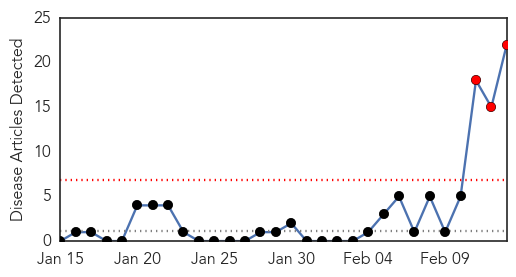

30 Day Trends
Web: 3 alerts, 0 warnings
Twitter: 1 alerts, 0 warnings
Top Articles:
- 0.999
- Filipina nurse from Saudi tests positive for MERS-CoV
- 0.999
- Eleven people linked to Philippines Mers case show symptoms
- 0.999
- 11 linked to Mers case ‘reveal symptoms’
- 0.999
- Eleven people linked to Philippines MERS case show symptoms -WHO
- 0.998
- 11 co-passengers of Mers-CoV patient showed symptoms
- 0.997
- 11 Filipinos show symptoms of MERS-CoV after contact with nurse with same condition
- 0.995
- 10 more admitted to RITM for MERS-CoV check
- 0.990
- OFW back in North Cotabato exhibiting Mers-CoV symptoms
- 0.988
- MERS claims 2 more livesHealthcare
- 0.988
- 11 patients have MERS-CoV symptoms - DOH
- 0.986
- Saudi Arabia confirms 8 new MERS cases
- 0.985
- 11 linked to Philippines MERS case showing symptoms, says WHO
- 0.979
- 11 people who had contact with infected nurse show MERS-CoV symptoms
- 0.978
- Headlines, News, The Philippine Star
- 0.976
- Top Stories
- 0.969
- MERS in the Philippines: DOH says 11 contacts admitted at RITM
- 0.967
- 11 who had close contact with PH nurse showing Mers-CoV symptoms—DOH
- 0.966
- 11 in contact with nurse show symptoms of MERS
- 0.950
- DOH: 11 close contacts of MERS-CoV nurse to undergo second round of tests
- 0.880
- Woman dies of MERS, 7 more infectedSaudi Arabia
- 0.863
- 2 of 5 Zamboangueños from Saudi plane with positive MERS-CoV case traced
- 0.802
- 2 of 5 Zambo residents who were with MERS-CoV-positive Filipina nurse located
Top Tweets:
-
No tweets found for Feb 13, 2015
Web/News Articles
Tweets

Article Locations

Article Confidences